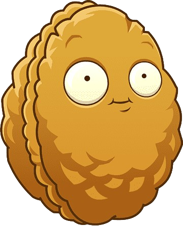
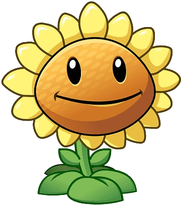

🎇Plants vs Zombies🧟♀️

Рослини проти зомбі — це відеогра у жанрі «оборона вежі», в якій гравець захищає свій заміський будинок від зомбі. Галявина розділена на сітку, з будинком гравця зліва[2][3]. Гравець розміщує різні типи рослин на окремих квадратах сітки. Кожна рослина має свій стиль захисту, наприклад, стрілянина, вибухи та блокування[4]. Різні типи зомбі мають свою особливу поведінку та свої слабкі місця стосовно різних рослин. Наприклад, зомбі на повітряній кулі може парити над рослинами гравця, але його куля може бути розірвана кактусом. Інші приклади зомбі включають зомбі-танцюриста, який викликає навколо себе танцюристів; і зомбі-вершника на дельфіні, який їде на дельфіні, щоб перестрибнути через рослину.[5] Гравець може вибрати обмежену кількість видів рослин з пакетів з насінням на початку кожного рівня, і повинен заплатити за їх розміщення, використовуючи валюту під назвою «сонце». Гравець збирає сонце, натискаючи на іконки сонця, які випадково з'являються на галявині, або використовуючи певні рослини, які генерують сонце, наприклад, соняшники та сонячні гриби[6]. Кожен тип рослин перезаряджається між кожним розміщенням з різною швидкістю. Лопата може використовуватися для викопування та видалення рослин. У лівому кінці кожної смуги розташована газонокосарка одноразового використання; якщо зомбі досягає цього кінця, косарка активується і вбиває всіх зомбі на цій смузі. Якщо зомбі досягає кінця смуги, косарка якої вже була використана, гравець повинен перезапустити рівень[
 Горохостріли – це перша лінія оборони. Вони стріляють у атакуючих зомбі.
Втрата: Середній (стріляє горошинами)
Горохостріли – це перша лінія оборони. Вони стріляють у атакуючих зомбі.
Втрата: Середній (стріляє горошинами)
Примітки: не садіть його в ліву частину Даху, так як горошини, що вистрілюються, будуть ударятися про нерівності. А щоб підвищити ефективність його снарядів, краще перед ним посадити Древофакел, що робить його горошини вогненними
Як одна рослина може так швидко вирощувати горох та стріляти ним? Горохостріл відповідає: “Важка праця, зобов'язання та здоровий, сонячний, збалансований сніданок із вуглекислим газом, роблять це можливим”
Ціна: 100 Зарядка: Швидка
Стіна-Горіх – має міцну оболонку, яку ви зможете використовувати для захисту ваших рослин.
Міцність: 72 укуси, а стадії деградації проявляються на 24-му та 48-му укусах
Якщо зайти в Альманах під час гри в Стенореховий Боулінг і натиснути на нього, то він покотиться.
"Людям цікаво, що ж я відчуваю, коли мене їдять зомбі." - каже Стіна-Горіх. "Вони просто не розуміють, що з моїми обмеженими почуттями для мене це як просте поколювання, схоже на розслаблюючий масаж".
Ціна: 50 Зарядка: Довго
Соняшник - дуже важливий, він виробляє вам додаткове сонце. Вирощуйте їх якнайбільше
Виробництво сонця: 25
Примітки: краще розміщувати Соняшники в два ряди ближче до будинку гравця, а перед ними посадити оборонні рослини
Соняшник не може встояти перед ритмом. Що це за ритм? Ну, це життєдайний джаз-ритм самої Землі, що б'ється на частоті, яку чує тільки Соняшник
Ціна: 50 Зарядка: Швидка